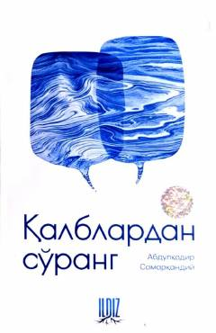

QSPayg'ambarimiz hayotidan ibratli lavhalar va axloqiy saboqlar jamlangan kitob.
Ushbu kitobda Payg'ambarimiz Muhammad sollallohu alayhi vasallamning hayotlari, yuksak axloqlari, tavozelari va sahobalar bilan munosabatlari haqida ibratli hikoyalar bayon etilgan. Asar o'quvchilarga ruhiy xotirjamlik va go'zal axloq saboqlarini beradi.